Mis hobbies
A mi me gusta el mundo de la informática y las telecomunicaciones: programar, redes de computadoras, etc. Como cualquier chico curioso, comencé desde niño a desarmar aparatos para ver como funcionan (algo de lo que no me arrepiento). Mi primer contacto con la informática fue cuando me regalaron una vieja computadora con MS-DOS y Windows 3.11. Tal hecho sucedió en el año 2008 (yo tenía 8 años de edad). Desde ese momento me di cuenta que podría hacer muchas cosas con una computadora. Con esa vieja computadora no podía hacer mucho en esa época, ya que el software ya era escaso, pero era mejor que nada.
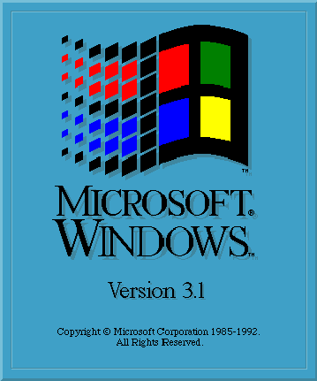 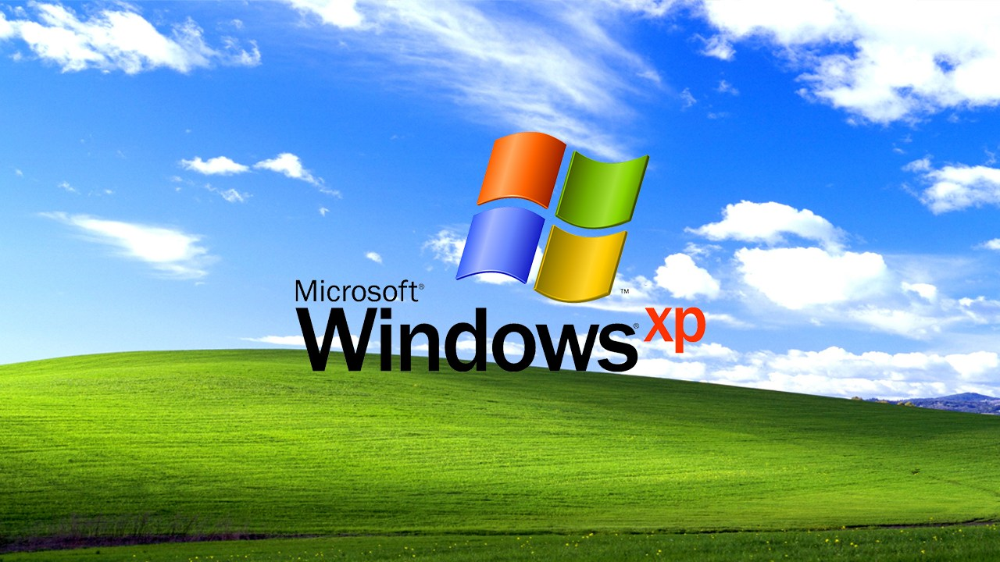Unos meses despues, llegó a la casa (digo llegó porque no se quien la compró, ciertamente creo que fue un regalo y era usada) una computadora más nueva. Recuerdo que esa computadora tenía un Pentium 4, 1 GB de memoria y un disco de 80 GB de capacidad. Lamentablemente, no duró mucho debido a un problema con la fuente de alimentación, lo cual daño la placa base. Sin placa base ni fuente, prácticamente no convenía repararla.
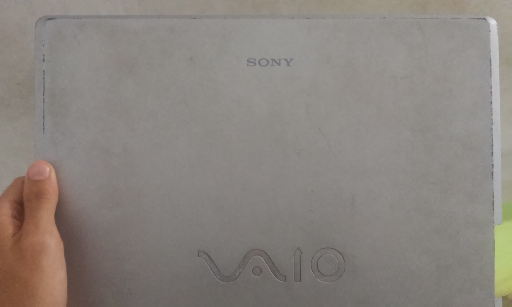Despues, tuvé una laptop Sony Vaio, que ya era antigua para la época. Fue con esa computadora donde aprendí más de como usar el mítico Windows XP. Aun recuerdo esa PC.
He aquí una de mis actividades preferidas desde entonces: averiguar todo lo que podía hacer en Windows (tomando en cuenta lo que mis conocimientos me permitan). Además de eso, siempre me a gustado reconstruir computadoras antiguas para apreciar como funcionaba. De hecho tengo un proyecto con un AMD Athlon que venía en una vieja PC que una vecina me regaló; solo falta conseguir un módulo de memoria. Y uno podría preguntarse: ¿para qué reparar una PC vieja?, ¿qué uso le daría? Bueno, realmente no es que la piense usar cotidianamente, más bien para hacer pruebas o probablemente algún servidor WEB o FTP o quizá una "PC Gaming retro", todo es posible.
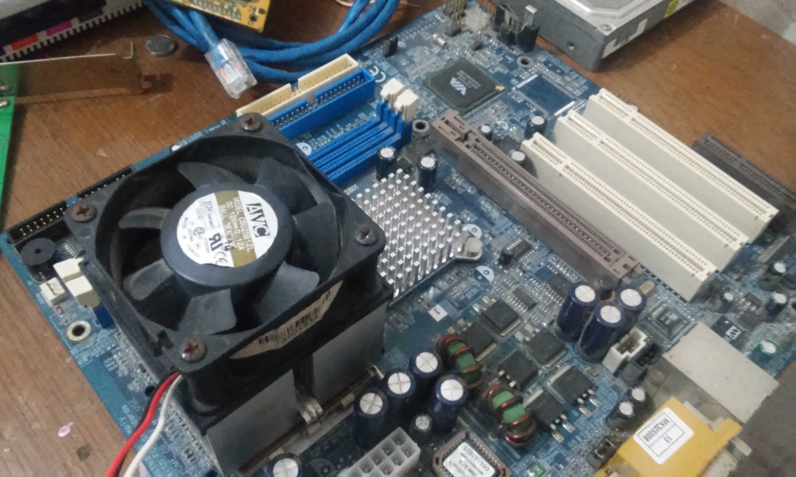 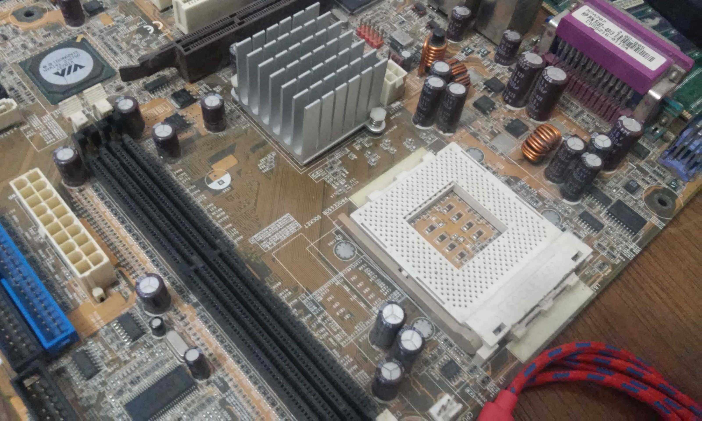 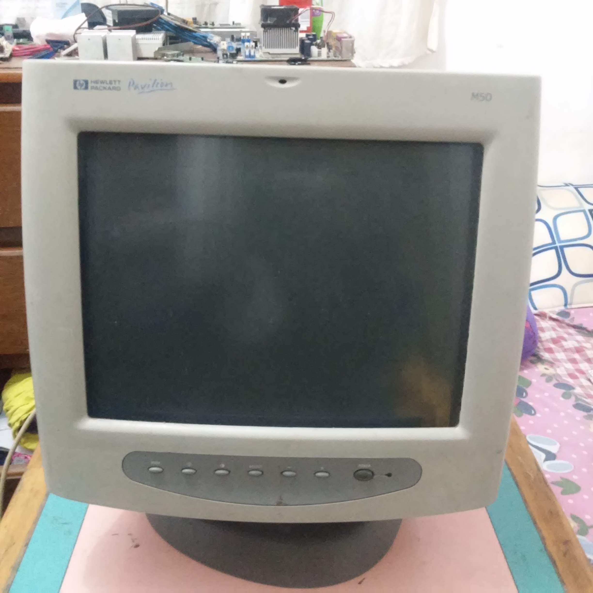 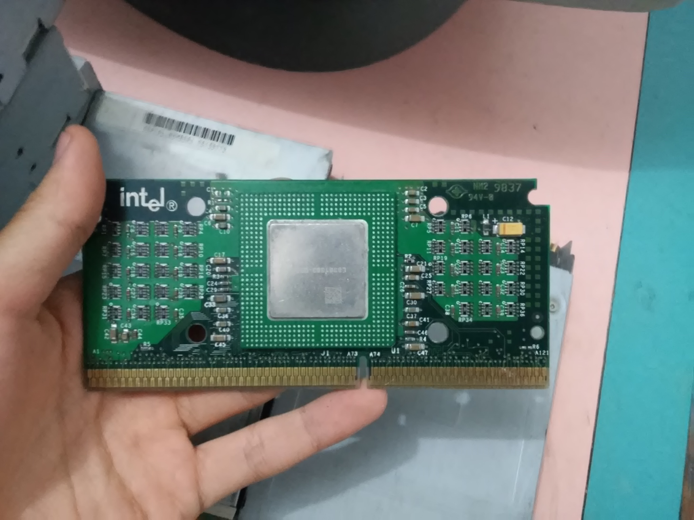 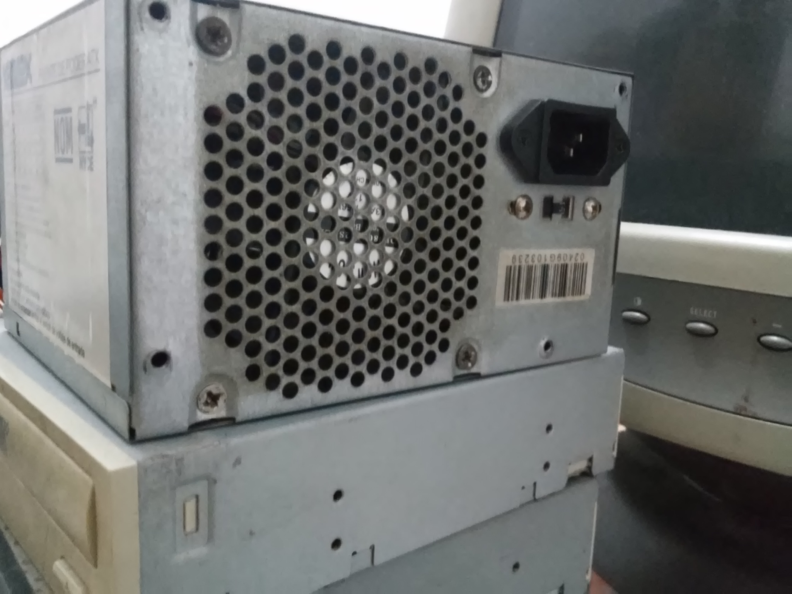 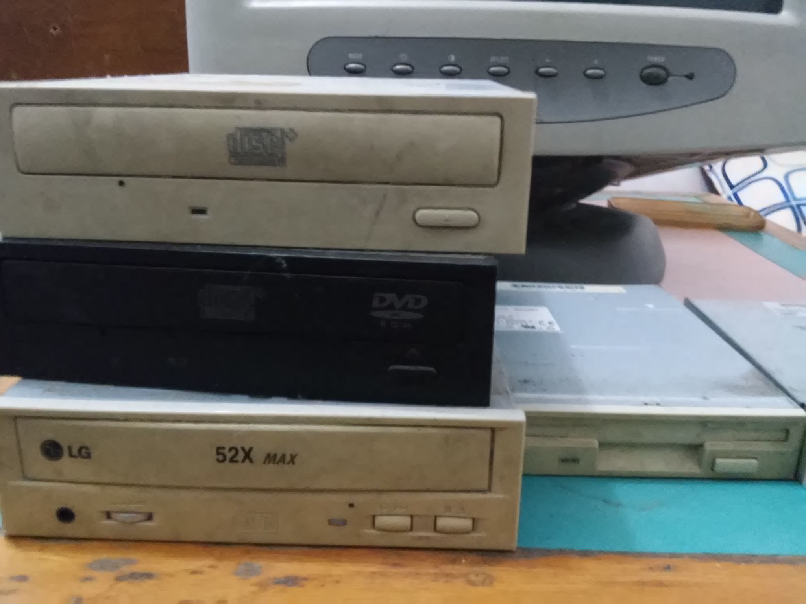 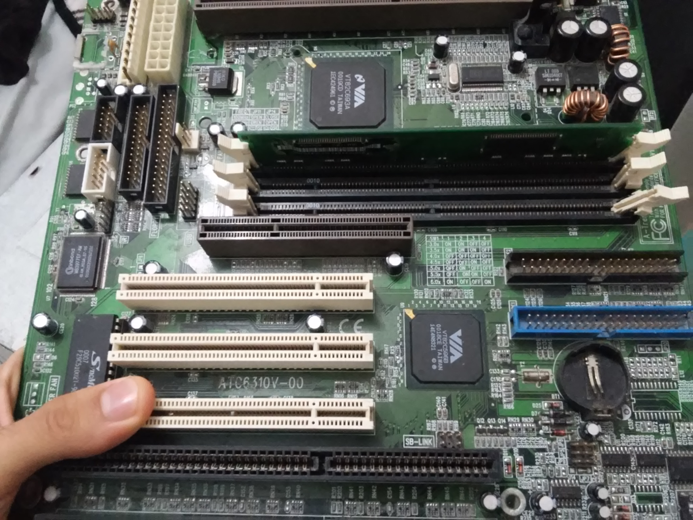Gameplays
Una vez grabé un gameplay. A continuación dicho gameplay:
Modificar mi PC de escritorio
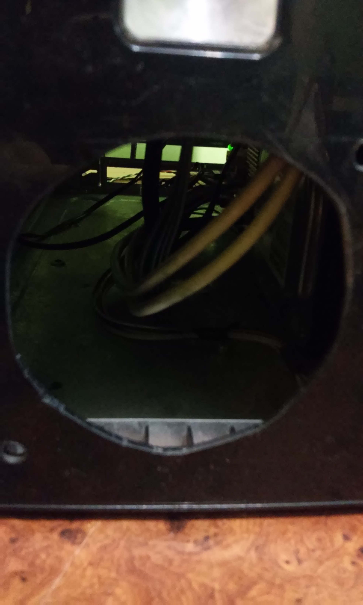 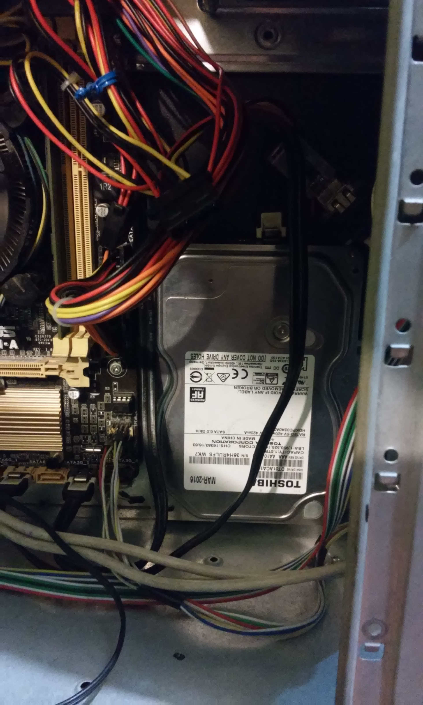Muchas veces prefiero el rendimiento que la estética. Es bien sabido que si una PC no tiene una adecuada ventilación y/o refrigeración, se calentará y perderá rendimiento. Por esa razón, decidí hacer una modificación al gabinete, que consiste en colocar un ventilador en la parte frontal para mejorar la ventilación.
Como se puede observar, la estética no es la mejor pero funciona. Además de eso, modifica el case para poder alojar un disco duro más.
Videojuegos
En realidad no me considero un "Gamer" apasionado, pero si juego varios videojuegos. Agunos de ellos:
- Gran Turismo
- Euro Truck Simulator 2 y American Truck Simulator
- Varios titulos de Need for Speed en la PC
- El clasico Age of Empires II